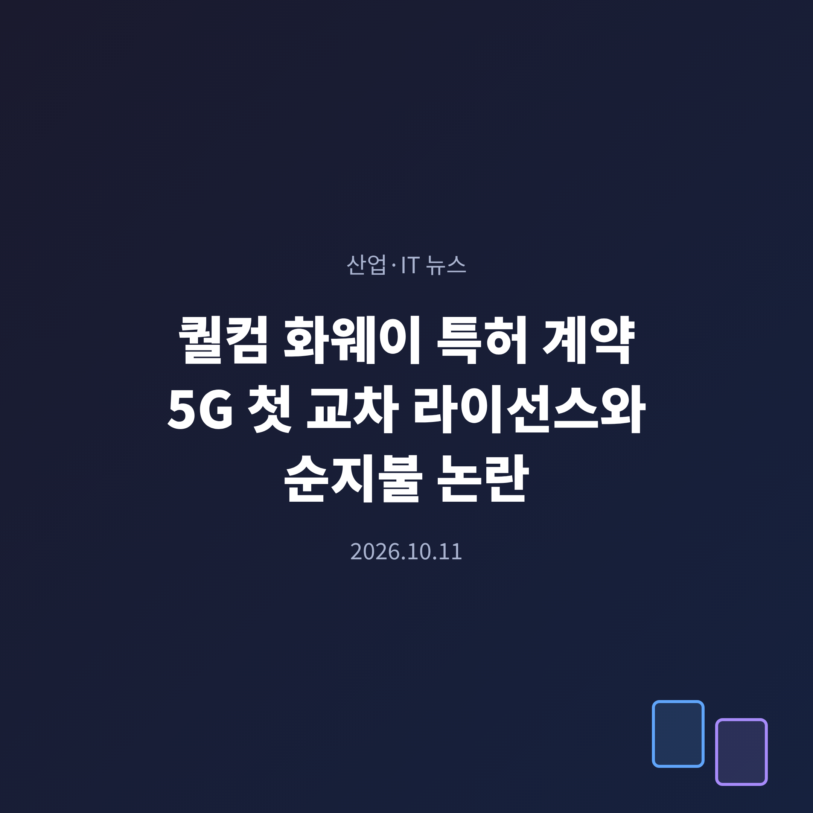
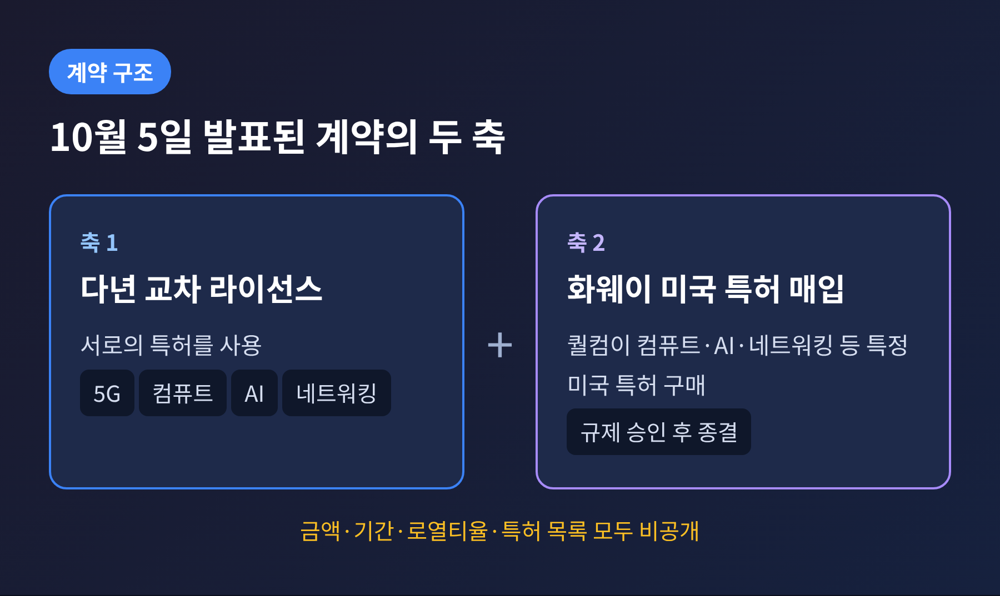
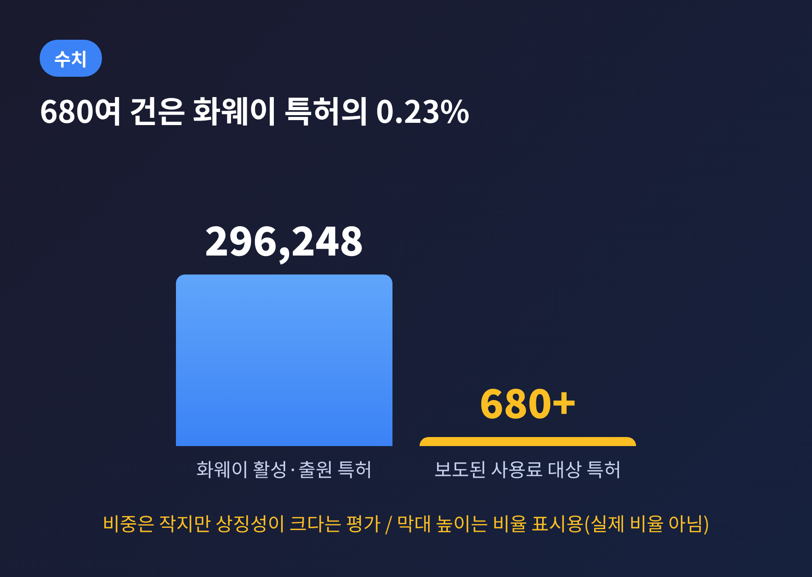
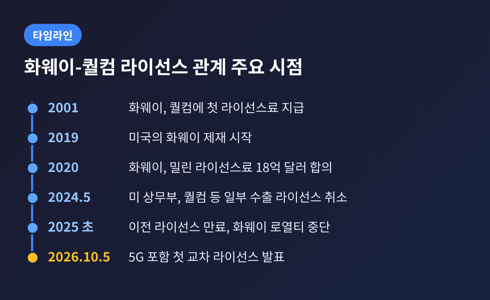
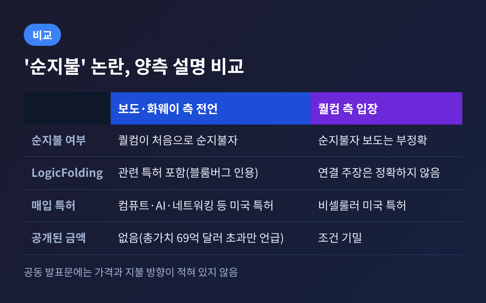
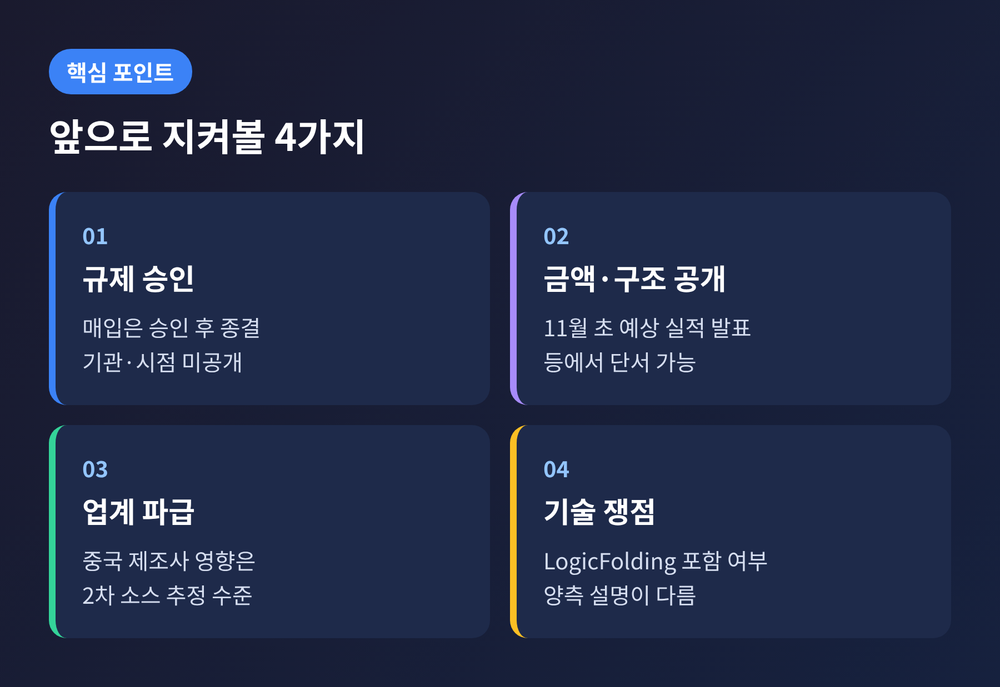

3줄 요약
오늘은 퀄컴 화웨이 특허 계약이 무엇을 뜻하는지 정리해 보려 합니다.
발표 내용과 양측의 엇갈린 해석을 나란히 놓고, 확인된 것과 확인되지 않은 것을 구분해 보겠습니다.
2026년 10월 5일(월), 화웨이와 퀄컴이 다년(multi-year) 특허 라이선스 계약을 발표했습니다.
두 회사가 서로의 특허를 쓰는 교차 라이선스이고, 대상 분야는 5G, 컴퓨트, AI, 네트워킹입니다.
5G를 직접 다룬 양사 간 첫 특허 계약이라는 점이 먼저 눈에 띕니다.
계약은 두 갈래로 이뤄져 있습니다.
하나는 앞서 말씀드린 교차 라이선스입니다.
다른 하나는 퀄컴이 컴퓨트·AI·네트워킹 등에서 화웨이의 '특정 미국 특허'를 사들이는 거래입니다.
이 매입은 필요한 규제 당국의 승인을 받은 뒤에야 종결됩니다. 어느 기관이 언제 심사하는지는 공개되지 않았습니다.
화웨이는 이번 계약으로 자사 특허 라이선스 계약의 총가치가 69억 달러를 넘게 된다고 밝혔습니다.
반면 계약 금액, 기간, 로열티율, 특허 목록은 모두 공개되지 않았습니다.

퀄컴 기술라이선싱 부문의 존 한 EVP는 이번 계약이 "퀄컴의 5G 기술 리더십에 대한 업계의 인정을 재확인한다"고 밝혔습니다.
동시에 화웨이의 지속적인 혁신과 5G 분야 지식재산을 인정한다는 취지도 덧붙였습니다.
화웨이의 앨런 판 최고지식재산책임자는 계약이 화웨이 혁신의 가치를 보여준다고 했습니다.
그는 4G·5G 표준에 대한 기여, 그중에서도 폴라 코드 전송 기술을 언급했습니다.
두 발언의 온도는 서로 다릅니다.
퀄컴은 자사 5G 기술의 위상을, 화웨이는 자사 특허의 가치를 각각 앞세웠습니다.
공동 발표문 자체에는 가격도, 어느 쪽이 돈을 더 내는지도 적혀 있지 않았습니다.
배경을 보면 이 계약이 주목받은 이유가 보입니다.
화웨이가 퀄컴에 처음 라이선스료를 낸 것은 2001년입니다.
이후 20여 년간 돈은 대체로 한 방향으로 흘렀습니다.
2020년에는 화웨이가 밀린 라이선스료 18억 달러를 퀄컴에 지급하기로 합의했다는 보도도 있었습니다.
닛케이 아시아는 이번 계약에서 퀄컴이 사상 처음으로 '순지불자(net payer)'가 된다고 전했습니다.
TrendForce와 TweakTown이 이 내용을 인용해 보도했습니다.
퀄컴이 사용료를 내는 화웨이 특허는 680여 건으로, 화웨이의 활성·출원 특허 296,248건 가운데 약 0.23%입니다.
숫자만 보면 작은 비중입니다.

그럼에도 상징성은 큽니다.
화웨이는 2019년부터 미국의 제재를 받아 왔습니다.
2024년 5월에는 미 상무부가 인텔과 퀄컴의 화웨이 대상 일부 수출 라이선스를 취소했습니다.
칩과 소프트웨어 접근이 막힌 기업이, 반대로 미국 반도체 기업에 특허 값을 받는 구도가 됐다는 해석이 나올 만합니다.
다만 이 해석은 '순지불' 보도가 맞다는 전제 위에 서 있습니다.

발표 직후 퀄컴 대변인이 입장을 밝혔습니다.
조건은 기밀이며, 퀄컴을 순지불자로 규정한 보도는 "부정확하다"는 내용입니다.
퀄컴은 또 이번 계약을 LogicFolding 기술과 연결짓는 주장도 "정확하지 않다"고 했습니다.
매입 대상은 비셀룰러(non-cellular) 미국 특허라고 설명했습니다.
이 입장이 나온 날짜는 매체에 따라 10월 5일과 6일로 엇갈려, 여기서는 '발표 직후'로 적습니다.
업계 분석가인 안셸 삭도 퀄컴이 화웨이에 라이선스료를 낸다는 보도는 사실이 아니라고 지적했습니다.
그는 공식 발표문이 LogicFolding을 거명하지 않았다는 점과, 오히려 특허 매입에 주목해야 한다는 점을 짚었습니다.
한편 화웨이 쪽 설명으로 전해진 내용은 다릅니다.
블룸버그는 화웨이 대변인을 인용해, 계약 포트폴리오에 LogicFolding 칩 설계 기술과 광학 관련 특허가 포함된다고 보도했습니다.
LogicFolding은 올해 5월 공개된 화웨이의 칩 설계 방식으로, 9월 선보인 Mate XT 2의 Kirin 9050 Pro가 첫 적용 칩으로 알려졌습니다.
정리하면 이렇습니다.
닛케이 등의 보도는 '퀄컴이 사용료를 낸다'는 방향이고, 퀄컴은 '교차 라이선스이며 순지불은 아니다'라는 방향입니다.
어느 쪽이 맞는지는 지금 공개된 자료로는 판단할 수 없습니다.
퀄컴의 반박이 교차 라이선스의 순지불 여부를 다룰 뿐, 별도 특허 매입 대금을 누가 얼마를 내는지까지 설명하지는 않는다는 지적도 있습니다.

가장 큰 변수는 규제입니다.
퀄컴이 사들이는 것은 미국 특허이고, 상대는 미국 제재 대상인 화웨이입니다.
닛케이는 계약 가치가 미국 하트-스콧-로디노법상 심사 기준인 1억 3,390만 달러를 넘을 것으로 보도했습니다.
다만 화웨이는 가치를 공개하지 않았고, 어느 기관이 심사하는지도 확인되지 않았습니다.
화웨이는 이미 260건 이상의 라이선스 계약을 보유하고 있습니다.
노키아, 삼성, 아마존 등과 계약을 맺었고, HP와는 지난 8월 합의했습니다.
제재 속에서 자체 연구개발에 힘을 쏟은 결과가 특허 수익으로 돌아오고 있다는 분석이 나옵니다.
퀄컴 입장에서는 또 다른 사정이 있습니다.
회사 FY2025 연차보고서에 따르면 화웨이 로열티는 이전 라이선스가 만료된 2025년 초 중단됐습니다.
새 계약이 공시된 로열티 수익을 더하지는 않는다는 점은 짚어 둘 만합니다.
같은 날 퀄컴은 Arm과의 로열티 소송 재판도 델라웨어 연방법원에서 시작했습니다.
특허와 라이선스가 반도체 기업의 핵심 자산이라는 사실이 같은 주에 두 갈래로 드러난 셈입니다.
주가 반응도 있었습니다.
퀄컴 주가는 발표 당일 프리마켓에서 오른 뒤 하락 마감했다는 보도가 있었습니다.
다만 주가는 여러 요인이 겹쳐 움직이므로 이 계약 하나로 설명하기 어렵습니다. 이 글은 투자 권유가 아니며, 투자 판단과 책임은 본인에게 있습니다.
첫째, 규제 당국의 판단입니다.
특허 매입 조항은 승인 없이는 종결되지 않습니다. 승인 여부와 시점이 계약의 실질을 가를 것입니다.
둘째, 금액과 구조의 공개 여부입니다.
퀄컴의 다음 실적 발표는 11월 초로 예상되는데, 날짜는 아직 확정되지 않았습니다.
공시나 설명에서 라이선스 수익이 어떻게 잡히는지가 순지불 논란을 정리할 단서가 될 수 있습니다.
셋째, 업계 파급입니다.
중국 스마트폰 업체들이 이 계약을 어떻게 받아들일지 주시하고 있다는 분석이 있으나, 이는 2차 소스의 추정이어서 확정된 사실로 보기는 어렵습니다.
넷째, 기술 쟁점입니다.
LogicFolding과 근접 패키지 광학(NPO) 인터커넥트가 실제로 계약에 포함됐는지는 양측 설명이 다릅니다.
이 부분은 이후 공시나 추가 발표에서 확인될 가능성이 있습니다.

끝으로 한 마디만 더 드리겠습니다.
이번 계약에서 확인된 것은 '교차 라이선스와 특허 매입이 맺어졌다'는 사실 하나입니다.
"누가 더 냈는가"는 아직 아무도 숫자로 증명하지 못했습니다.
양측의 설명이 모두 자기 입장에서 합리적인 만큼, 다음 공시가 나올 때까지는 성급한 결론을 내리지 않는 편이 낫겠습니다.
참고 출처: Data Center Dynamics(10/5), TrendForce(10/5), TweakTown(10/5), tech-ish(10/7), Winbuzzer(10/10), NeoTeo(10/8), Futureweb(10/6), Yahoo Finance(10/5)